Restored Platform
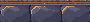
Native 1×3× nearest-neighbor
Top combat stone platform · original pixels
Restored the exact stone platform, rocky board-surrounding background and darker player-portrait backing from your older screenshot. All 33 selected modules, characters, gems, shared controls and layout remain unchanged. The three restored textures are reused directly from the earlier asset library.
Actual Unity art-review scene. 33 selected modules plus three reused older background assets; no recoloring or regeneration. The portrait backing overfills its mask. All source files are preserved. Production Game and main are unchanged.
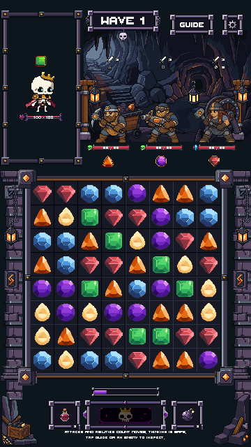

Selection and preservation checks · Handoff notes

Native 1×Top combat stone platform · original pixels
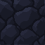
Native 1×Board-surrounding rock background · original pixels
Overfilled masked player-portrait background · original pixels
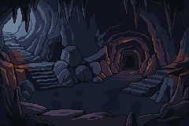
Native 1×240 × 160 · 20 opaque colors · unchanged pixels
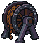
Native 1×57 × 63 · 11 opaque colors · unchanged pixels
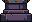
Native 1×32 × 22 · 11 opaque colors · unchanged pixels
32 × 13 · 7 opaque colors · unchanged pixels
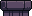
Native 1×32 × 16 · 6 opaque colors · unchanged pixels
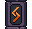
Native 1×32 × 29 · 12 opaque colors · unchanged pixels
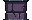
Native 1×32 × 20 · 10 opaque colors · unchanged pixels
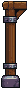
Native 1×28 × 89 · 14 opaque colors · unchanged pixels
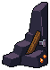
Native 1×56 × 78 · 13 opaque colors · unchanged pixels
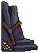
Native 1×56 × 76 · 12 opaque colors · unchanged pixels
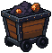
Native 1×58 × 59 · 12 opaque colors · unchanged pixels
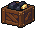
Native 1×36 × 29 · 11 opaque colors · unchanged pixels
20 × 40 · 12 opaque colors · unchanged pixels
20 × 40 · 13 opaque colors · unchanged pixels
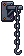
Native 1×24 × 56 · 8 opaque colors · unchanged pixels
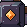
Native 1×27 × 27 · 14 opaque colors · unchanged pixels
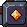
Native 1×27 × 27 · 14 opaque colors · unchanged pixels
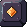
Native 1×27 × 27 · 11 opaque colors · unchanged pixels
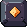
Native 1×27 × 27 · 13 opaque colors · unchanged pixels
9 × 9 · 7 opaque colors · unchanged pixels
25 × 9 · 7 opaque colors · unchanged pixels
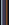
Native 1×9 × 25 · 7 opaque colors · unchanged pixels
9 × 25 · 7 opaque colors · unchanged pixels
25 × 9 · 7 opaque colors · unchanged pixels
13 × 13 · 9 opaque colors · unchanged pixels
13 × 13 · 9 opaque colors · unchanged pixels
13 × 13 · 9 opaque colors · unchanged pixels
13 × 13 · 9 opaque colors · unchanged pixels
9 × 9 · 7 opaque colors · unchanged pixels
16 × 7 · 5 opaque colors · unchanged pixels
7 × 16 · 5 opaque colors · unchanged pixels
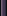
Native 1×7 × 16 · 5 opaque colors · unchanged pixels
16 × 7 · 5 opaque colors · unchanged pixels
Barrel, BeamStrap, CaveRecess, CaveWall, LowerLedge, LowerWall, MineEntrance, Ore, OreSmall, Platform, Rope, Tools, TopBeam, Tracks